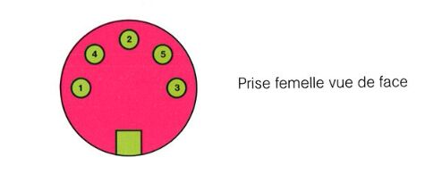

minitel
The Minitel 1B is a home Videotex terminal used in France in the 80s/90s. It was pretty popular back then, which makes finding a used one relativly easy nowadays (at least in France).
While it cannot, to my knowledge, run custom programs, but it can be used as a dedicated terminal by connecting it to another computer/raspberry pi.
DIN-5 connector pinout
The Minitel 1B has a DIN-5 connector that can be used for serial communication.

- Rx
- GND
- Tx
- PT (transmiting)
- Power supply (8.5V)
Logic levels
Special care should be taken when connecting to a Minitel as the Rx pin can be pulled to 15V. When using a Raspberry Pi for instance, an adapter circuit is required.
Serial parameters
Serial communication requires devices to agree on a set of parameters.
Baudrate
| baudrate | Key combination |
|---|---|
| 300 | Fctn+P, 3 |
| 1200 | Fctn+P, 1 |
| 4800 | Fctn+P, 4 |
Messages
Bytes transmitted to and from the Minitel 1B uses are 7 bits long followed by 1 parity bit (even).